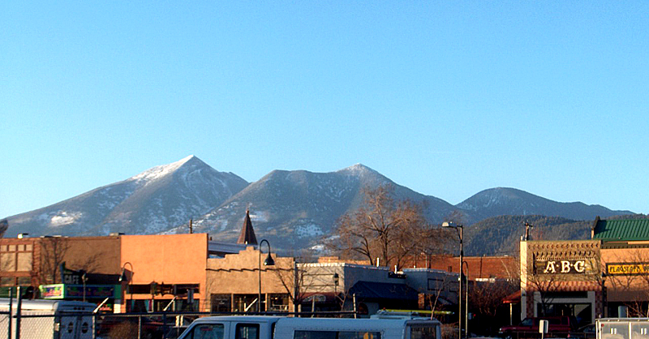

Flagstaff, Arizona
Mountain town at 7,000 ft with world-class outdoor access and 266 sunny days

Key Stats
Overview
Flagstaff is a mountain city at 7,000 feet elevation in the ponderosa pine forests of northern Arizona, surrounded on nearly all sides by the Coconino National Forest. It is home to Northern Arizona University (25,000 students), W.L. Gore & Associates (maker of Gore-Tex), and serves as the gateway to the Grand Canyon (80 miles north) and Sedona (30 miles south). The city enjoys 266 sunny days per year, a true four-season climate, and access to world-class hiking, mountain biking, and skiing at Arizona Snowbowl.
The outdoor lifestyle is genuinely outstanding -- Coconino National Forest provides millions of acres for recreation, the San Francisco Peaks rise to 12,633 feet, and the 56-mile Flagstaff Urban Trail System (FUTS) connects neighborhoods throughout the city. The climate is dry with only 8 inches of rain annually but a substantial 81 inches of snow, which melts quickly in the intense mountain sunshine. Average commute is just 16 minutes, and the downtown has genuine small-town charm with Route 66 heritage and a vibrant brewery scene.
However, for a Reformed Christian family prioritizing faith community and classical education, Flagstaff has significant gaps. There are zero classical Christian schools -- the two Christian schools (Flagstaff Christian School and Northland Christian School) both use Abeka curriculum, not classical trivium. The Reformed church presence is thin: one PCA congregation (Church of the Resurrection), one Reformed Baptist church, and one CRC church -- no OPC, CREC, or EPC. Housing is expensive ($630K median) with severely limited land due to the surrounding national forest, and the COL index of 127 matches Bend without the offsetting benefit of no sales tax (Flagstaff's combined sales tax is 9.386%). The low 2.5% flat state income tax and 0.42% property tax rate are genuine advantages, but the overall package places Flagstaff at the bottom of the comparison set.
Category Scores
Scored 1-10 per category. Weighted overall: 3.7 / 10.
Cost of Living
Index 127 -- well above national average (100). Score: 3/10.
Flagstaff's COL index of 127 is driven almost entirely by housing (index 181). Groceries are essentially at national average (102), utilities are actually 10% below average (90), and transportation is only slightly above (104). The tax picture is mixed: Arizona's 2.5% flat income tax is one of the lowest in the country, and the 0.42% effective property tax rate means only $1,680/year on a $400K home -- very favorable. However, the combined sales tax of 9.386% (state + county + city) is quite high. The median household income of $65,652 is depressed by the large NAU student population; working household income is likely higher. Unemployment at 6.6% is above average, partly due to seasonal tourism patterns. Top employers include NAU (2,571), Flagstaff Medical Center (2,200), and W.L. Gore (1,950). Remote work friendliness is rated "High" given good internet infrastructure and the mountain-town appeal to remote workers.
Housing & Land
Median home $630K with balanced market (67 days on market). Score: 2/10.
Neighborhoods
| Neighborhood | Price Range | Family Rating | Notes |
|---|---|---|---|
| Ponderosa Trails | $450K - $1M | Excellent | Newer community, parks/trails, Mountain Charter School, very family-oriented |
| University Heights | $400K - $700K | Excellent | 1960s neighborhood, large backyards, forest trails, clubhouse with pool/spa/gym |
| Continental Country Club | $350K - $800K+ | Good | Golf community, condos to custom estates, pools/tennis/amenities |
| Kachina Village | $300K - $550K | Good | 10mi south, rustic mountain community in ponderosa pines, most affordable option |
| Doney Park / North Peak | $400K - $900K+ | Good | Rural 1-5+ acre lots, A-R zoning, no HOA, best for horse property |
Land availability is rated "Limited" -- Flagstaff is surrounded by Coconino National Forest on nearly all sides, severely constraining new development. In-city lots average $271K/acre (skewed by small parcels). For ranch/acreage, Doney Park and North Peak offer equestrian-zoned properties (A-R zoning, 1-5+ acre lots, no HOA) east of the city. Kachina Village (10 miles south) provides the most affordable housing in the area. Williams (30 minutes west on I-40) offers significantly cheaper land at $10K-$50K/acre. The market has 4.2 months of supply with homes selling at 95.8% of asking price -- trending toward balance but not yet a buyer's market. Inventory is up 26% year-over-year, and days on market have risen from 35 to 67.
Education
No classical Christian schools, limited private options. Score: 3/10.
Classical Christian Schools
There are no classical Christian schools in Flagstaff. This is a significant gap for families prioritizing classical, trivium-based education in a Christian context.
Christian & Private Schools
| School | Grades | Tuition | Notes |
|---|---|---|---|
| Flagstaff Christian School | K - 9 | $6,300 | 244 students, largest private school. Students taught grade level ahead. 12 sports. 29:1 ratio. |
| Northland Christian School | K - 10 | $6,400 | 93 students, Abeka curriculum (Pensacola Christian), AACS accredited, 12:1 ratio. |
| BASIS Flagstaff (charter) | 5 - 12 | Free | Top 5% in Arizona, nationally ranked public charter. Rigorous STEM-focused. |
Homeschool Co-ops
| Co-op | Type | Notes |
|---|---|---|
| Northern AZ Homeschool Support Group | General Support | Support group for homeschool families in Flagstaff / Northern Arizona |
| Trailblazers Learning Community | Secular Enrichment | Hands-on, project-based learning for ages 6-14 |
| PATH Collective | Enrichment | Enrichment education for homeschool students PreK-7th grade |
Education is Flagstaff's weakest category alongside faith. There are zero classical Christian schools. Both Flagstaff Christian School and Northland Christian School use Abeka curriculum -- a traditional Christian curriculum but not classical trivium. Neither school goes through 12th grade (K-9 and K-10 respectively). The standout option is BASIS Flagstaff, a free public charter ranked in the top 5% of Arizona schools with rigorous STEM-focused academics, but it starts at 5th grade and is not Christian. FUSD public schools rate C+ overall (district ranked #328 of 601 AZ districts), though Flagstaff High School individually has a 93% graduation rate. Arizona has very favorable homeschool laws, and there are several co-ops, but no confirmed Christian classical co-op. Classical Conversations lists Coconino County in their Arizona coverage area, but no specific Flagstaff community was verified -- families would need to contact CC directly.
Faith Community
One PCA, one Reformed Baptist, one CRC. No OPC/CREC/EPC. Score: 2/10.
Reformed & Presbyterian Churches
| Church | Denomination | Size | Notes |
|---|---|---|---|
| Church of the Resurrection | PCA | Small-Medium | "Faithful to the Scriptures, True to the Reformed Faith." 740 W University Heights Dr S. |
| Flagstaff Christian Fellowship | Reformed Baptist | Small-Medium | 123 S Beaver St. Considering ACME Fellowship affiliation. Gospel-centered, near NAU campus. |
| Hope Community Church | Christian Reformed (CRCNA) | Small-Medium | Est. 1966, 3700 N Fanning Dr. Reformed tradition, Heidelberg Catechism. Preschool ministry. |
The Reformed presence in Flagstaff is thin. Church of the Resurrection (PCA) is the only confessionally Presbyterian Reformed congregation, meeting at University Heights. Flagstaff Christian Fellowship is a Reformed Baptist church near the NAU campus that is considering affiliation with the ACME Fellowship. Hope Community Church is a Christian Reformed (CRCNA) congregation that has been in Flagstaff since 1966, offering the longest Reformed heritage in the area. There are no OPC, CREC, EPC, or ARP congregations. No seminary exists in Flagstaff; the nearest options are Foundations Institute in Prescott Valley (~1.5 hours) and Fuller Seminary's extension in Phoenix (~2.5 hours). The broader Christian organizational presence includes Crossroads Ministries (since 1987), Faithworks (mission ministry), and Canterbury Campus Ministry at NAU, with 60+ Christian nonprofits in the metro area. For a family seeking a robust Reformed church community, Flagstaff requires building your own network across the three small-to-medium congregations rather than plugging into an established ecosystem.
Lifestyle & Outdoors
Flagstaff's standout strength: mountain recreation with exceptional sunshine. Score: 8/10.
Outdoor Recreation
| Activity | Quality | Details |
|---|---|---|
| Hiking | 5 / 5 | Coconino NF, San Francisco Peaks (12,633 ft), 56-mi FUTS, Grand Canyon 80mi, Sedona 30mi |
| Skiing | 4 / 5 | Arizona Snowbowl: 777 acres, 8 lifts, 2,300 ft vertical, snowmaking, Nov-Apr |
| Equestrian | 4 / 5 | Millions of acres Coconino NF, AZ High Mountain Trail Rides, equestrian-zoned areas |
| Fishing | 3 / 5 | Mormon Lake, Upper/Lower Lake Mary nearby, decent but not destination-level |
| Cycling | 5 / 5 | Outstanding mountain biking in Coconino NF, gravel/fat biking, 56-mi FUTS, Bike Score 65 |
| Climbing | 4 / 5 | Numerous crags with variety of rock types and styles, strong local community |
Climate
Safety & Walkability
Flagstaff's outdoor recreation is genuinely world-class. The Coconino National Forest surrounds the city on nearly all sides, providing millions of acres of public land for hiking, biking, and horseback riding. The San Francisco Peaks include Arizona's highest point (Humphreys Peak, 12,633 ft), and the 56-mile FUTS urban trail system connects neighborhoods throughout the city. Arizona Snowbowl offers legitimate resort skiing with 777 acres, 8 lifts, and 2,300 feet of vertical drop -- not as large as Colorado or Utah resorts but remarkably convenient. The mountain biking is outstanding, and the city has a Bike Score of 65. The climate is unique: 266 sunny days (more than nearly anywhere in this comparison), only 8 inches of rain, but 81 inches of snow that melts quickly due to the dry air and intense sunshine. Summer highs hit 82F with cool 50F nights at this elevation. Winter lows of 17F are genuinely cold. The Grand Canyon is 80 miles north and Sedona is 30 miles south -- proximity to two iconic destinations is unmatched. Cultural amenities include the Museum of Northern Arizona, Lowell Observatory (where Pluto was discovered), 8 craft breweries, and NAU's arts programs. Violent crime (292/100K) is slightly below the Lexington baseline, but property crime (2,418/100K) is elevated. The city-wide Walk Score of 39 is car-dependent, though downtown scores 80-90+.
Community & Culture
Small mountain-town charm but university-town dynamics. Score: 5/10.
Flagstaff has genuine small-town mountain character despite its 78K population. The reported median age of 25.9 is heavily skewed by NAU's 25,000 students; the permanent resident median age is likely 35-40. Population growth is very slow at 0.14% annually, constrained by the surrounding national forest limiting new development. The city proper (Coconino County) leans politically progressive as a university town, but surrounding rural areas trend more conservative -- the overall mix is "Moderate." Family-friendliness is "Good" with strong neighborhoods like Ponderosa Trails and University Heights, excellent outdoor recreation for kids, and decent schools. The homeschool community is moderate -- several support groups and co-ops exist (Northern AZ Homeschool Support Group, Trailblazers, PATH Collective), and Arizona has very favorable homeschool laws, but the community is smaller and less organized than Bible Belt cities. The volunteer culture is active, driven partly by NAU's service-learning programs, with the City of Flagstaff operating a dedicated Volunteer Flagstaff platform. *Note: median age statistic heavily influenced by university student population.
Pros and Cons
Strengths
- World-class hiking (Coconino NF, Grand Canyon 80mi, Sedona 30mi, San Francisco Peaks)
- 266 sunny days per year -- exceptional even compared to other Western mountain towns
- Arizona Snowbowl ski resort minutes from town (777 acres, 8 lifts)
- Outstanding mountain biking and cycling infrastructure (Bike Score 65, 56-mi FUTS)
- True four-season climate with dry air and quick snow melts
- Arizona's 2.5% flat income tax -- one of the lowest in the country
- Very low 0.42% effective property tax rate ($1,680/yr on $400K home)
- Genuine small-town mountain feel with 16-minute average commute
- Horse-friendly zoning in Doney Park/North Peak with national forest trail access
- Gateway to Grand Canyon and Sedona -- iconic proximity
Weaknesses
- Zero classical Christian schools -- both Christian schools use Abeka, not classical trivium
- Neither Christian school goes through 12th grade (K-9 and K-10)
- Very thin Reformed church presence: 1 PCA, 1 Reformed Baptist, 1 CRC, no OPC/CREC/EPC
- Expensive housing: $630K median, land severely limited by surrounding national forest
- COL index of 127, matching Bend but without Oregon's zero sales tax offset
- Combined sales tax 9.386% is quite high
- Lower median household income ($66K, depressed by student population)
- 6.6% unemployment rate, partly seasonal tourism patterns
- Elevated property crime (2,418/100K)
- Classical Conversations community not confirmed in Flagstaff specifically
- University-town progressive lean in Coconino County
- 81 inches of annual snowfall -- genuine winter driving conditions
External Links
| Resource | Link |
|---|---|
| City of Flagstaff | flagstaff.az.gov |
| Discover Flagstaff (Tourism) | flagstaffarizona.org |
| Arizona Snowbowl | snowbowl.ski |
| Flagstaff Unified School District | fusd1.org |
| Church of the Resurrection (PCA) | cor-pca.org |
| Flagstaff Christian Fellowship | fcfonline.org |
| Hope Community CRC | hopeflagstaff.com |
| Realtor.com -- Flagstaff | realtor.com/Flagstaff_AZ |
| BestPlaces -- Flagstaff COL | bestplaces.net |